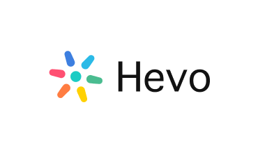

Data-driven Product Thinker building scalable growth & experimentation systems
I sit at the intersection of data science, ML, and user behaviour — turning raw signals into product decisions that drive measurable growth. I don't just analyse; I hypothesise, experiment, and close the loop.
Experience
Where I've worked, what I built, and the technical systems behind the results.
Working on the Candidate Growth team — combining data engineering, ML feature work, and campaign automation to improve how job notifications reach and convert the right candidates.
- Built and maintained MySQL + Metabase dashboards tracking L0 notification funnel metrics (sent → delivered → read → clicked → applied) at daily, weekly, and segment granularity.
- Authored complex Athena SQL queries joining event logs, user metadata, and campaign config tables to produce CPD (Cost per Download) and CPR (Cost per Registration) views across WhatsApp, push, and email channels.
- Designed a star-schema data model (facts + dimensions) for the notification system, enabling ad-hoc metric queries without schema changes.
- Automated WhatsApp campaigns via cron-based segmentation pipelines — scoring each user by engagement window (morning / afternoon / evening) using 30-day rolling event history.
- Built an auto-refresh pipeline that re-evaluates user segment assignments every 14 days, detecting drift via a 20% engagement-window shift threshold.
- Designed an Agentic Copy Writer pipeline using LLMs to generate personalised, on-brand notification copy per segment — structured output with character-limit guards, ready for direct injection into the campaign scheduler.
- Built the Notification Time Affinity Model — a rule-based send-time scoring system that computes per-user engagement windows from historical event streams, reducing back-off to a single best-time-of-day approximation.
- Analysed 2024–2025 tech job market trend data to derive demand-weighted job category signals, used to improve default targeting logic for cold-start users.
- Developed weighted composite notification health metrics — balancing CTR, application rate, and unsubscribe rate — to prevent vanity metric optimisation in campaign scoring.

Worked across data infrastructure, AI-powered product tooling, and content-driven conversion — building systems that turned technical evaluators into qualified leads.
- Administered 80+ ETL/ELT pipelines in Hevo's platform — covering real-time and batch workflows, with connector development via REST APIs and secure TCP/IP data channels.
- Ensured data reliability for downstream marketing attribution — maintaining pipeline health metrics and debugging connector-level failures across Snowflake, Redshift, and BigQuery destinations.
- Worked with Snowflake's credit-based pricing model at depth — including virtual warehouse sizing, query optimisation, and cost attribution per pipeline.
- Designed and built a context-sensitive support chatbot using LangChain + Gemini 1.5 Flash + FAISS vector retrieval — deployed across 50+ technical blogs with sub-second retrieval latency.
- Implemented fine-tuned prompt engineering with structured output constraints to keep responses within Hevo brand voice and within token limits across varied user queries.
- Instrumented chatbot usage to identify top unanswered query patterns — feeding insights back into content and documentation teams.
- Led design and implementation of the Snowflake Pricing Calculator — an interactive self-serve tool embedded at key mid-funnel content pages to reduce friction in the technical buyer journey.
- Mapped the full technical evaluator → MQL conversion funnel, identifying pricing ambiguity as the primary drop-off driver — which directly motivated the calculator feature.
Built ML systems for large-scale app policy violation detection — combining transformer-based classification, anomaly detection, and RAG-based explainability to reduce false positive rates at scale.
- Fine-tuned Roberta-Large for multi-class policy violation classification on Samsung's proprietary app review dataset — achieving 86.3% accuracy on a held-out test set.
- Designed and ran the full ML training pipeline: data cleaning, label alignment, tokenisation, hyperparameter tuning (learning rate schedules, weight decay), and evaluation via confusion matrix + F1 breakdown by class.
- Built monitoring systems to detect anomalies in 10K+ user interactions — using statistical baselines + sliding window z-score alerts to flag unusual app behaviour patterns.
- Implemented a Retrieval-Augmented Generation (RAG) pipeline using Llama 3.2 1B as the base LLM — enabling the system to generate natural-language explanations for violation flags, making moderation decisions auditable.
- Built a policy document chunk index using dense retrieval — so the LLM's generated explanations were grounded in specific policy clauses, not hallucinated.
- Reduced false positives by 40% by layering the RAG-based explanation pass on top of the classifier output — reviewer rejections of low-confidence flags dropped significantly.
Measurable Impact
Numbers that reflect decisions made, not just tasks completed.
Product Case Studies
How I've approached real problems — from hypothesis to impact.
WorkIndia — Performance Marketing Automation
Hevo Data — Funnel Conversion Engine
Samsung Prism — LLM Safety Guardian
Independent Technical Projects
Explorations in modeling and simulation outside of work.
EvoDrive — Genetic Algorithm Simulation
Can evolutionary algorithms solve pathfinding better than rule-based systems?
Text-to-SQL (StarCoder2 Fine-tune)
How cheap can you make an LLM that's actually good at SQL generation?
Perplexa
A conversational engine capable of grounded, real-time web retrieval.
Vehicle Movement Analysis & Insight Generation
Extracting structured, queryable data from unstructured video streams of vehicle traffic.
Experimentation & Growth Systems
Building infrastructure that makes decisions repeatable, not one-off.
A/B Testing via Cron Segmentation
Segmented user cohorts by engagement history to run controlled timing experiments — moving from intuition-based send times to data-validated windows.
Metric Design (Weighted Metrics)
Designed composite notification health metrics that balance engagement with user fatigue — avoiding optimisation for a single vanity metric.
Auto-Refresh System (14-day cycle)
Built a pipeline that automatically re-evaluates user segment assignments every 14 days based on fresh engagement data — preventing segment staleness.
How I Think About Products
Mental models I use to make better product decisions.
Optimise for downstream metrics, not vanity metrics
Open rate is a proxy. Application rate is a business outcome. I always trace the metric chain to find what actually matters and set guardrails on the rest.
Balance engagement with user fatigue
More notifications ≠ more engagement. Every product decision has an attention budget. I always model the unsubscribe cost alongside the click gain before shipping a frequency change.
Prefer systems over one-off solutions
A script that runs once is technical debt. A pipeline that runs every 14 days, logs itself, and handles edge cases is a product. I build for the second run, not the first.
Use data to guide, not dictate decisions
Data shows what happened; it rarely explains why. I combine quantitative signals with user behaviour intuition and business context — never outsourcing the decision to a number alone.
Ship experiments, not assumptions
Every product strong opinion is a hypothesis in disguise. I default to small, fast experiments before committing to large builds — minimising the cost of being wrong.
Make the invisible legible
The best product insight is the one nobody sees yet — buried in event logs, latency spikes, or drop-off points. I treat data exploration as a product skill, not just an analytical one.
Education

KIIT University
B.Tech in Computer Science (2021-2025)
CGPA: 8.9

Sri Chaitanya Techno School
All India Senior School Certificate Examination (2020-2021)
Percentage: 93%
St. Patricks HS School
Indian Certificate of Secondary Education Examination (2018-2019)
Percentage: 92%
Publications
Precision Agriculture: Digital Twins and Advanced Crop Recommendation
IEEE ICOCT 2025 (Feb 2025)
Authors: Sayan Banerjee, Aniruddha Mukherjee, Suket Kamboj
DOI: 10.48550/arXiv.2502.04054
Efficient Waste Collection and Filtration using IOT
IJSREM (Jan 2023)
Authors: Sayan Banerjee, Rahul Naugariya, Shubham Patel, Shubham Kumar
DOI: 10.55041/IJSREM17403
Skills
- Product & Analytics: A/B Testing, Metric Design, User Segmentation, Funnel Analysis, Growth Experiments, Data Storytelling
- Programming Languages: Python, SQL, JavaScript, C++, Java, HTML, CSS
- Data & ML: Machine Learning, Data Modeling, ETL/ELT, NLP, LLMs, RAG, Vector DBs
- Tools & Platforms: MySQL, Metabase, Redshift, Snowflake, Airflow, Sagemaker, Kafka, Git, VS Code
- Frameworks/Libraries: TensorFlow, PyTorch, PySpark, LangChain, HuggingFace, Flask, Streamlit, Bootstrap
Achievements
Intel Unnati Industrial Training
Intel (Jul 2024)
Data Science Professional Cert
IBM (Apr 2024)
1st Position in Eureka Innovation
IIT Kharagpur (Feb 2024)
Certified Data Science Professional
Oracle (Jul 2023)
Machine Learning Specialization
DeepLearning.ai (Mar 2023)
Applied Python
Udemy (Dec 2022)
Extra-Curricular
- 1st Position at Inter Hostel Poetry Competition
- National Topper of Spelling Bee Competition
- Bachelor of Arts (BA) in Drawing from Sarva Vangya Charukala Academy
- State Level Debate Champion
Volunteering
- Youth Red Cross, KIIT – Content Team Lead (Oct 2022 - Jan 2024)
- Nai Disha Free Education Society – Student Volunteer (Apr 2015 - Mar 2018)